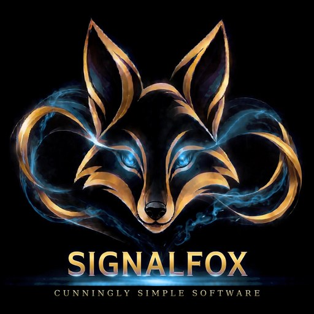

🎧
EMS Call-Assist
A call-taking assistant for the control room.
In the works

All your apps together. Pick one and it takes you straight into its testing window. At the top of that window you choose the test: Functional, which goes through and checks everything works, or Torture, which builds it up, pushes it hard, and gives you results. The red STOP button kills a test instantly.
The test page was killed. Nothing keeps running in the background.